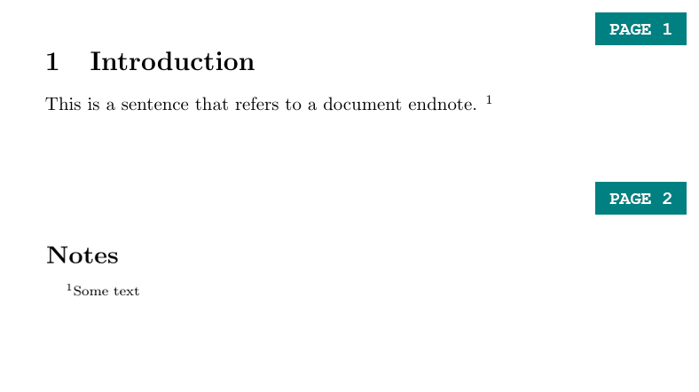

23 Referencing and the Bibliography
23.1 The Bibliography
23.1.1 .bib files
Similarly to other text editors, LaTeX allows you to create a bibliography list, which can later be referenced. To store the bibliography, LaTeX uses a separate file with extension ‘.bib’. You can create them and edit them using TexStudio, just as you would for a normal .tex file. Note that it is best to save your bibliography file in the same folder as the .tex file in which you want to include the bibliography. After a file is created, you simply use one line of LaTeX code and a reference section will appear at the end with all resources you have cited. Note that if a resource is cited
Within the .bib file, each bibliography entry has a specified structure, which allows you to specify the type of the bibliography resource, the label you assign to it, its author, year of publication and many others. The first example shows a BiBTeX bibliography entry for a journal article. Each entry begins with ‘@’, followed by the predefined BibTeX resource types (in this case, ‘article’). After that, a set of curly braces is opened – between them, you define the property of your bibliography resource. First a tag (in this case bartels2002) – this is a keyword you will use to cite the resource in your text, much like figure and table labels discussed earlier. You can tag each bibliography entry however you want, however it is good to stick to a coherent and clear naming convention, especially if you are planning to include many bibliography entries in your work. Following that are different attributes of your resource separated by commas. The value for each attribute is provided in curly braces after an “=” character.
@article{bartels2002,
author = {Larry M. Bartels},
title = {Beyond Running Tally: Partisan Bias in Political Perceptions},
journal = {Political Behavior},
volume = {24},
number = {10},
pages = {117-150},
year = {2002},
month = {6},
DOI = {https://doi.org/10.1023/A:1021226224601}}The examples below show the structure of other different resources – a book, a section in a collection (such as Oxford or Routledge Handbooks) and a miscellaneous object (such as a data set). In the examples, each entry is tagged by the author’s name followed by the year of publication. Note that many attributes are optional in most resource types and it’s up to you how detailed do you want to make the specification of each resource. More importantly, some of these are specific to a particular resource type (for example (‘booktitle’ will be meaningful for the @incollection resource type, but not for @article).
@book{popper1934,
author = {Karl R. Popper},
title = {The Logic of Scientific Discovery},
year = {1934},
publisher = {Routledge}}
@incollection{bollen2008,
author = {Kenneth A. Bollen and Sophia Rabe‐Hesketh and Anders Skrondal},
title = {Structural Equation Models},
booktitle = {The Oxford Handbook of Political Methodology},
year = {2008},
editor = {Janet M. Box-Steffensmeier and Henry E. Brady and David Collier},
publisher = {Oxford University Press}}
@misc{worldbank2019,
author = {{The World Bank Group}},
title = {{World Development Indicators}},
url = {https://datacatalog.worldbank.org/dataset/world-development-indicators},
month = {10},
year = {2019}}In the last example, {{The World Bank Group}} is placed in double curly braces. That is to specify that it is an organization (aka corporate author) rather than an individual that authored the resource, and that the order of the world in the name should be maintained when citing (the in-text citation should take the form of The World Bank Group, 2019 as opposed to Group, 2019 which would happen without the second set curly braces, as LaTeX would treat “World Bank Group” as a name of an individual same as “Larry M Bartels”, and therefore would use only the last word in the name, assuming it’s the surname).
The title of the dataset is also placed in double curly braces – that is because, by default, LaTeX makes only the first word in the resource title capitalized and the following words begin with a small letter. If you want to preserve the capitalization of any word in your title, put it in an additional set of curly braces. So title = {World Development Indicators} would yield World development indicators in the bibliography section, while title = {{World Development Indicators}} would result in World Development Indicators.
23.2 Citing Bibliography Resources

\documentclass{article}
\usepackage[natbibapa]{apacite}
\bibliographystyle{apacitex}
\begin{document}
In this sentence, I reference the article \textit{Beyond Running Tally: Partisan Bias in Political Perceptions} included in the bibliography \citep{bartels2002}.
This sentence references the book of the Austrian-British philosopher Karl Popper \citep[pp. 14--15]{popper1934}.
This sentence references a chapter in the Oxford Handbook of Political Methodology \citep{bollen2008}.
Finally, the last sentence refers to a World Bank Data Set, including measures such as HDI \citep{worldbank2019}.
\bibliography{my_bibliography}
\end{document}In order to start referencing resources in your text, all you need to do is load a dedicated package called in the preamble of your document, notify LaTeX of the bibliography style you wish to use (\bibliographystyle), and the bibliography file you are using with a \bibliography markup tag at the end of the document. Then you can cite each entry in your bibliography using \citep{resource} markup tag, where resource is the tag you have assigned in the .bib file. For example \citep{bollen2008} will compile as (Bollen et al., 2008). Additionally, you can use square brackets after the \citep tag to add a note to be included in the parentheses with the citation, for example, the exact pages to which you are referring. If you want to reference specific pages, say 14-15 of Popper’s book, you can do that by using \citep[pp. 14–15]{popper1934}, which compiles as (Popper, 1934, pp. 14-15).
NatBib contains various other citation formats and you can find a full list here.
23.3 Endnotes

\documentclass{article}
\usepackage{endnotes}
\begin{document}
\section{Introduction}
This is a sentence that refers to a document endnote. \endnote{Some text}
\clearpage
\theendnotes
\end{document}If you prefer your footnotes to appear at the end of your document, use the package ‘endnotes’. To create an endnote use the \endnote markup tag, and enter \theendnotes in the part of your document in which you would like them to appear (usually at the end), similarly to the \tableofcontents tag for the table of contents or the \bibliography tag for references.